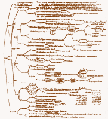
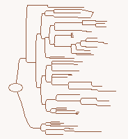

Real Being in Existence and Appearance
|  |  |
| Photocopy of chart from the14th century Karlsruhe MS of Le Myesier's Breviculum | The same chart reproduced with MindManager software
1998 |
VIEW MULTI MAP
navigate multimap
by clicking on links
and using browser's
back button
This second figure is really born of the first or Golden Figure which is its mother as it were, and the first figure was pregnant with the second figure which it implicitly contained. Now when you see an object at a great distance, you receive a universal impression of it that does not yet reveal what it is, but only some confused, unknown but real entity, substance or body. Then as you get closer, it can be identified as an animal by its perceptible shape and animal movement. And getting even closer, you can see that it is a man. Similarly as the eye approaches this figure it becomes obvious that it was implicitly contained in the first figure where it existed in apparent confusion.Here we see its introduction, origin and the subsequent order it follows. Through this second figure, the first or Golden Figure displays, moves and unfolds its members and shows the intrinsic parts of its being through gradual connections. And this unfoldment can be learned through the sense of sight and captured by the imagination and kept in memory until it is again remembered and communicated to the intellect. The necessity of this figure becomes apparent as we look at it, for the general scope of the first figure needs to be clarified and opened by using the second as an auxiliary. It is useful for visualizing the divisions of being without which no knowable object can be distinguished as without these divisions the human intellect remains in total ignorance and confusion.
I made these visual figures so that by viewing them you can immediately and clearly see many things and commit them to memory all in one time and place as you memorize the figures by imagining them. And as memory brings them back to the intellect, the will is moved to love the figures. And thus the soul takes great delight in learning sciences while visualizing them.
The final conclusion of the above is that any conclusion that destroys the order of figures or any figure or member is contrary to the truth, and indicates that the true conclusion must be signified by its opposite. If the false conclusion is affirmative, then take its negative version and if it is negative, take the affirmative version of it as the true conclusion.